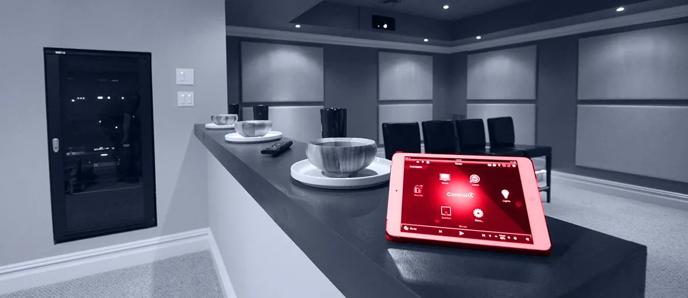

Map the flow
Map the device sources, telemetry fields, and asset model rules with your Digital Products team in week one.
Proposal brief for Techgene Solutions
Techgene already sells speed, skilled people, and delivery trust. Elinext can add a small IoT squad behind one open role, so client work keeps moving.
Why we are here: we saw the IoT Integration Software Engineer search for Digital Products. It points to telemetry ingestion, AWS IoT, and asset modeling work.
Map the device sources, telemetry fields, and asset model rules with your Digital Products team in week one.
Build one ingestion path using AWS IoT, Python or TypeScript, and clear retry and error rules.
Add automated checks for payload shape, late data, edge disconnects, retry loops, and cloud handoff failures.
Package the work as a repeatable playbook your recruiters can use on the next client need.
Elinext is a full-cycle software development company founded in 1997. We have about 700 in-house specialists, with no freelancers or subcontractors. Our teams cover backend, mobile, QA, AI/ML, DevOps, and product delivery. We hold ISO 9001 and ISO 27001, useful when client data and delivery risk matter. Work for Siemens, Broadcom, Volkswagen, and TRUMPF shows we can support complex engineering programs. For Techgene, that means a steady squad behind the IoT role, while your hiring team keeps moving.

Elinext improved a real-time IoT monitoring app with React, TypeScript, Server-Sent Events, and large data handling.
Read case study
Elinext built firmware and mobile parts for a wireless lighting control system using C/C++, BLE, and Android Things.
Read case study